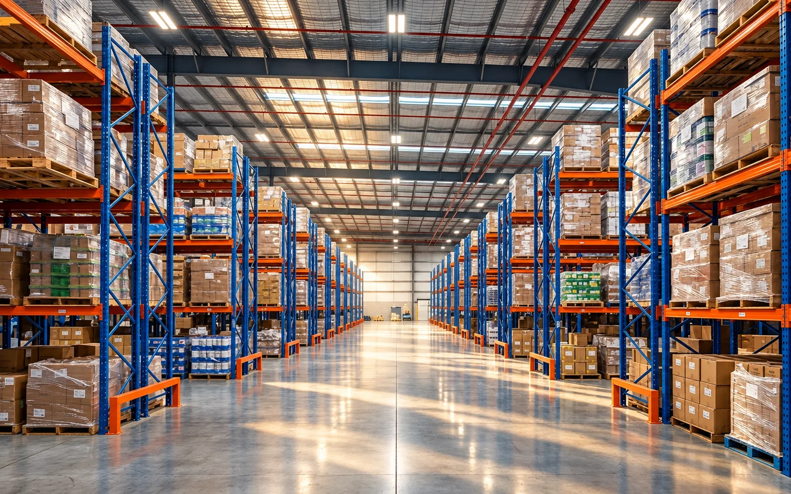

Selective Pallet Racking
Selective pallet racking is single-deep racking in which every pallet sits on a pair of beams and can be reached directly by a forklift. ProRack designs and manufactures selective racking in Hyderabad for bay loads up to 20,000 kg and installs it across India.
At a glance
Selective Pallet Racking specifications
| Bay load | Up to 20,000 kg |
|---|---|
| Beam capacity | 1,000 kg to 4,500 kg per pair |
| Pallet access | 100% of pallets directly accessible |
| Beam adjustment | Repositionable on 50 mm or 75 mm pitch |
| Handling equipment | Counterbalance and reach forklifts |
| Best for | High SKU variety, FMCG, retail distribution, cold stores |
| Design codes | EN 15512, IS 800 and IS 1893 seismic checks |
| Manufactured in | Hyderabad, Telangana, India; installed across India |

How it works
How selective pallet racking works
Upright frames are connected by pairs of horizontal beams, and each pallet rests across one beam pair. Because every pallet faces an aisle, any pallet can be put away or retrieved without moving another one.
Beam levels can be moved as the inventory profile changes, and the system can be extended bay by bay. Safety accessories such as column protectors, rack end barriers and mesh decking are specified with the layout.
Is it the right fit?
When to choose selective pallet racking
- You store many different SKUs and need access to every pallet
- Stock rotation is mixed or changes often
- You use standard counterbalance or reach forklifts
- You expect the layout to change as the business grows
Compare
When another system may fit better
- Very narrow-aisle racking when land is expensive and you need more pallet positions on the same footprint.
- Drive-in racking when you hold large quantities of a few SKUs.
- Pallet flow racking when strict first-in, first-out rotation is required.
Planning a project
What we need for a quotation
- Project location and expected timeline
- Warehouse dimensions, clear height and column grid
- Pallet or item dimensions and weights
- Number of storage positions required
- Handling equipment in use or planned
- Floor slab details, if available
ProRack reviews the requirement, prepares a layout and structural design in Tekla Structures and RSTAB, manufactures in Hyderabad and installs through SmartFit Solutions. See how we engineer projects.
Questions
Selective Pallet Racking FAQs
What is the load capacity of selective pallet racking?
ProRack selective pallet racking is engineered for bay loads up to 20,000 kg, with beam pair capacities from 1,000 kg to 4,500 kg. The final capacity depends on the upright section, beam length, number of levels and floor slab, and is confirmed by project-specific design to EN 15512 and IS 800.
How wide should the aisles be for selective pallet racking?
Aisle width is set by the forklift. Selective racking served by counterbalance and reach forklifts typically uses aisles of about 3.0 m to 3.8 m. If floor space is the constraint, very narrow-aisle racking can reduce aisles to about 1.5 m with turret trucks.
Can selective pallet racking be reconfigured later?
Yes. Beam levels can be repositioned on standard 50 mm or 75 mm pitch increments and bays can be added. Any change to beam levels or loads should be checked against the load chart before use.
Last updated by the ProRack engineering team.
Discuss your selective pallet racking project
Let's make
space work.
Share your layout and load details.
Our engineers will recommend a configuration.